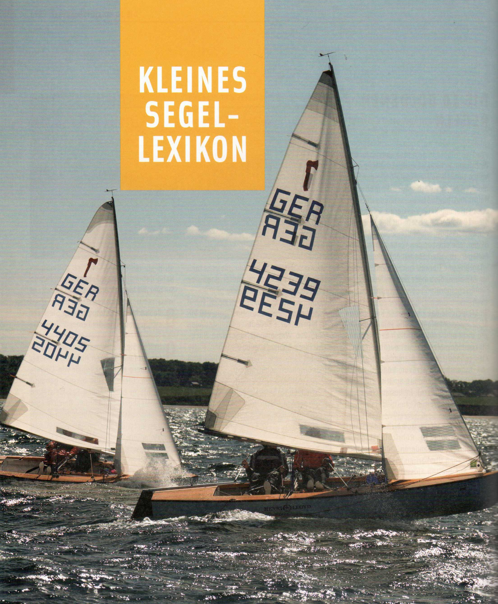
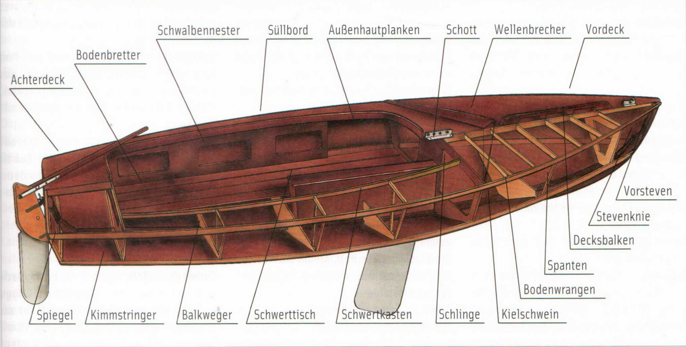

Abdrift (auch Abtrift) Seitliches Versetzen eines Bootes durch Wind oder Strom.
abfallen Eine Kursänderung vom Wind weg. (Gegenteil: anluven.)
ablandig Wenn der Wind vom Land in Richtung See weht. (Gegenteil: auflandig.) abschlagen Das Abnehmen der Segel. (Gegenteil: anschlagen.)
abtakeln Die gesamte Takelage vollständig abnehmen, also stehendes und laufendes Gut mit dem Mast, etwa um das Boot einzuwintern. Oft fälschlich verwandt für Segel abschlagen. (Gegenteil: auftakeln.) achteraus Alles, was hinter einem Boot liegt. (Gegensatz: voraus.)
Achterleine Festmacherleine, die vom Heck eines Bootes schräg nach achtern an Land oder zu einem Pfahl führt. Bisweilen auch als Heckleine bezeichnet. (Gegensatz: Vorleine.)
Achterliek (das) Die hintere Kante eines Segels.
Achterstag (das) Vom Masttopp zum Heck verlaufendes Stag, das die nach vorne gerichteten Kräfte des Mastes aufnimmt. (Gegensatz: Vorstag.)
Achterstagspanner Eine Vorrichtung, um die Spannung auf dem Achterstag zu verändern und dadurch den Mast nach vorne oder achtern zu trimmen. Auf kleineren Yachten eine Talje, eine Spannschraube oder ein Spannhebel. Auf größeren Yachten ein Handradspanner oder gar eine Hydraulik.
anluven Eine Kursänderung höher an den Wind heran. (Gegenteil: abfallen.) anschlagen Ein Segel am Baum oder Stag befestigen. (Gegenteil: abschlagen.) aufbrisen Der Wind nimmt an Stärke zu. auffieren Dem Zug auf einer Leine nachgeben, ohne sie ausrauschen zu lassen. Häufig auch nur: fieren.
aufklaren 1. Das Wetter »klart auf«, es wird besser. - 2. An und unter Deck Ordnung schaffen.
aufkommen 1. Mit Ruderlage mittschiffs die Drehbewegung des Schiffs allmählich verringern. - 2. Ein vorauslaufendes Schiff einholen. 3. Schlechtes Wetter, Gewitter, Sturm oder dergleichen kommt auf.
auflandig Wenn der Wind von See in Richtung Land weht. (Gegenteil: ablandig.) aufschießen 1. Mit dem Boot in den Wind drehen, um es zum Stehen zu bringen. - 2. Eine Leine in regelmäßigen Buchten zusammenlegen.
auftakeln (auch aufriggen) Die gesamte Takelage (Rigg) an Bord bringen und aufrichten. Oft fälschlich verwandt für Segel setzen. (Gegenteil: abtakeln.)
auftuchen Ein Segel oder auch eine Abdeckplane ordentlich zusammenlegen.
auf und nieder Seemännischer Ausdruck für senkrecht.
Auge Seemännische Bezeichnung für verschiedene Arten von Ringen, Ösen, Löchern oder Schlingen. In Wortverbindungen entfällt das »e« (Augspleiß, Augbolzen).
Augpressung Maschinelle Pressung eines Auges in Drahttauwerk mit einer Seilhülse.
Babystag (das) Auf Kielyachten ein zweites kürzeres Vorstag, das in Höhe der unteren Saling angreift und aufs Vordeck herabführt. Auch als Trimmstag bezeichnet, weil mit ihm die Mastbiegung reguliert werden kann.
back (engl.) Zurück, rückwärts. Wird ein Segel backgeholt, fällt der Wind von der »Rückseite« ein. Entweder segelt das Boot dann rückwärts, oder man erhöht dadurch das Drehmoment beim Wenden.
Backbord (Bb.) In Fahrtrichtung gesehen die linke Seite eines Bootes. Links.
Backskiste In die Cockpitbank eingebauter, von außen zugänglicher Staukasten.
Backstag (auch Preventer) Ein vom Mast nach achtern aufs Seitendeck führendes Stag. Es kann jeweils nur in Luv durchgesetzt werden. In Lee muss es losgeworfen werden, um nicht mit dem Großbaum zu kollidieren. Dient zum Trimmen des Mastes.
Bake (die) An Land als »festes« Seezeichen aufgestelltes Gerüst von auffälligem Aussehen.
Balkenbucht (die) Eine leichte konvexe Wölbung des Decks.
Balkweger Längsbalken, auf denen die Decksbalken ruhen.
Ballast (der) Gewicht im oder unter dem Kiel einer Yacht, um die Stabilität (Gewichtsstabilität) zu erhöhen. Meistens aus Blei.
Baum Eine Stange aus Holz, Kunststoff oder meistens Aluminium, an der die untere Kante eines Segels angeschlagen (Großbaum) oder auch »fliegend« gefahren wird (Spinnakerbaum).
Baumniederholer Unten am Mast angreifende Talje, die ein Steigen des Baums auf Vorm-Wind-Kursen verhindert. Auch als Kicker bezeichnet.
beidrehen Eine Yacht hoch am Wind durch entsprechende Segelstellung, etwa das Backholen der Fock, nahezu zum Stehen bringen.
beiliegen Beigedreht einen Sturm abwettern, aber auch längere Zeit annähernd an einer Stelle liegen bleiben, um etwas zu bergen oder eine Reparatur auszuführen.
bekneifen Festklemmen (von Leinen), belegen Eine Leine festmachen.
Beplankung Die Außenhaut eines konventionell gebauten Schiffes.
bergen 1. Die Segel herunternehmen. - 2. Einen Gegenstand in Sicherheit bringen. - 3. Ein in Seenot geratenes Schiff einbringen. Die Besatzung oder Ladung von einem gestrandeten Schiff herunterholen (abbergen). Besan (der) Auf Zwei- und Mehrmastern der hintere kürzere Mast. Aber auch das Segel daran wird als Besan bezeichnet.
Bilge (die) Der Raum im Bootsboden zwischen Kiel und Bodenbrettern.
Bindereff (auch Bändselreff) Die Segelfläche wird bei starkem Wind verkleinert, indem man das Tuch auf den Baum herunterholt und dort festbindet.
Blister (der) Ein großes spinnakerähnliches Leichtwetter-Vorsegel für Vorm-Wind- und Raumschots-Kurse, das aber ohne Baum gefahren wird.
Block Gehäuse aus Holz, Metall oder Kunststoff mit einer oder mehreren Rollen, über die Leinen laufen.
Boje 1. Im Grund verankerter Schwimmkörper zum Festmachen von Booten. - 2. Nicht ganz korrekte Bezeichnung für Tonnen, die als Seezeichen oder Wendemarken bei Regatten dienen.
Bord (der) Eigentlich die Schiffsseite (Backbord, Steuerbord), besonders deren Oberkante, daher »über Bord« fallen. »An Bord« heißt allgemein, sich auf einem Schiff befinden.
brechen 1. Seemännischer Ausdruck für das Reißen von Leinen und Ketten (nicht jedoch für Segel). -2. Das »Überkämmen« der Wellen, wenn sich auf einer Welle eine Schaumkrone bildet.
Brückendeck Auf Yachten eine mehr oder minder breite Abschottung des Cockpits gegen den Kajütniedergang, meist als Sitzbank einbezogen. Das Brückendeck verhindert, dass Wasser aus dem Cockpit in die offene Kajüte schwappt.
Bucht 1. Zurückspringendes Küstenstück. -2. Schleife in einer Leine. Sie wird »in Buchten« aufgeschossen.
Bug (der) Das vordere Ende eines Schiffes. Steuerbord- bzw. Backbord-Bug bezeichnet jedoch jeweils die Seite einer Yacht, auf der der Großbaum geführt wird.
Bugkorb (auch Bugkanzel) Fest auf dem Vorschiff montiertes Schutzgeländer aus verzinktem Stahl, Niro oder Aluminium. Entsprechend gibt es auf dem Achterschiff Heckkörbe.
Bullenstander (der) Eine Leine, die auf Vorm-Wind-Kursen vom Ende des Baums nach vorne geführt wird, um zu verhindern, dass der Baum auf die andere Seite herumschlägt.
Cunningham-Hole (auch C.-Kausch) Nach seinem Erfinder, dem Amerikaner Briggs Cunningham, benannter Vorliekstrecker am Großsegel. Eine zweite Kausch, etwa 15 cm über dem Segelhals, durch die ein Niederholer führt, mit dem das C-Hole auf den Baum heruntergeholt werden kann. So lässt sich die Großsegel-Wölbung unterschiedlichen Windverhältnissen anpassen.
Curryklemme Nach ihrem Erfinder, Dr. Manfred Curry, benannte, gezahnte Federklemme, die sich unter Zug bekneift. Vorwiegend zum Festsetzen von Schoten und Streckern verwendet.
CWL In der Schifffahrt übliche Abkürzung für Konstruktionswasserlinie, bis zu der ein Schiff, nach den Berechnungen des Konstrukteurs, ins Wasser eintaucht.
Deutscher Segler-Verband (DSV) 1888 gegründeter Dachverband der deutschen Segelclubs und oberste Segelsportautorität der Bundesrepublik.
Diamant(stag) (auch engl. Diamonds) Rhombusartige Verstagung des oberen Mastbereichs.
Dinette (die) Sprachschöpfung der Bootsbauer. Anordnung der Sofabänke zu beiden Seiten eines quer zur Schiffsrichtung stehenden Tisches. Manchmal sind die Bänke auch U-förmig um den Tisch gruppiert. Meist kann der Tisch abgesenkt und die Dinette zu einer Doppelkoje hergerichtet werden.
Dingi (das) Ein kleines Beiboot.
Dirk (die) Eine Leine, die vom Masttopp zum Ende des Baumes führt und den Baum hält, wenn das Segel abgeschlagen ist.
Dolle (die) Gabelförmiges Auflager aus Metall oder Kunststoff für den Riemen (von Landratten fälschlich als Ruder bezeichnet) beim Pullen (Rudern).
Draggen (der) Kleiner vierarmiger Anker, auch als Suchdraggen zum Auffischen über Bord gefallener Gegenstände.
Ducht (die) Quer oder längs liegendes Sitzbrett in einem offenen Boot.
dwars Querab, rechtwinklig zur Fahrtrichtung.
Ende Leine, Tau; ausgenommen sehr dicke Taue. Sie heißen Trossen. Die Enden eines »Endes« bezeichnet man als Tampen oder auch Tamp.
Fall (das, Mehrz.: Fallen) 1. Leinen oder Drähte zum Setzen der Segel. Entsprechend Großfall, Fockfall oder Spinnakerfall. - 2. Der Fall = Neigung eines Mastes nach vorne oder achtern.
Fender (der) Polster aus unterschiedlichen Materialien, um die Bordwand vor Beschädigungen an Stegen, Nachbarschiffen oder Ähnlichem zu schützen.
fieren Dem Zug auf einer Leine nachgeben, ohne sie ausrauschen zu lassen. Häufig auch: auffieren.
Finish (das) Begriff (aus dem Englischen), der mit dem Kunststoff-Bootsbau aufkam. Ursprünglich Kriterium für die äußere Gelcoatschicht (gutes oder schlechtes Finish), inzwischen zu einem etwas verschwommenen Begriff ausgeweitet für die Gesamtfertigung bzw. den Gesamteindruck eines Bootes. Fock (die) Dreieckiges Vorsegel. Es gehört zu den Haupt- oder Arbeitssegeln.
Fockroller Mechanische Vorrichtung, um die Fock, vom Cockpit aus, auf das Vorstag aufzurollen.
Formstabilität Sie ergibt sich, im Gegensatz zur Gewichtsstabilität, aus der Rumpfform. Jollen sind fast ausschließlich formstabil. Bei Kielyachten hat die Formstabilität nur einen geringen Stabilitätsanteil.
Freibord (der) Höhe der Bordwand über der Wasserlinie.
Gaffel (die) Rundholz, an dem das viereckige Gaffelsegel mit seinem Oberliek angeschlagen wird.
Gangbord (der) Geläufige Bezeichnung des Seitendecks zwischen Reling und Kajütaufbau oder Cockpitsüll.
Gatchen (auch Gattchen) Kleines, meist mit einer Metallkausch eingefasstes Loch in Segeln oder Planen, durch das Bändsel, Strecker oder Ähnliches gezogen werden können. Gennaker (der) Kunstwort aus Genua und Spinnaker für ein leichtes Vorsegel an einem Gennakerbaum, der als eine Art Bugspriet aus dem Vorschiff ausgefahren werden kann.
Genua (die) Eine große Fock für leichtere Winde. Sie zählt zu den Beisegeln. Regatta-Yachten haben bis zu vier Genuas unterschiedlicher Größen und Tuchstärken, die meist römisch beziffert werden. Also Genua I, II usw.
GFK Abkürzung für glasfaserverstärkter Kunststoff, das Baumaterial, aus dem heute die meisten Jollen und Yachten hergestellt werden.
gieren Seitliches Ausscheren eines Bootes aus seinem Kurs, besonders vor achterlichen Seen.
Gräting (die) Gitter oder Rost zum Abdecken von Luken und als Auflage auf Cockpitböden oder -bänken.
Gut (das) Das gesamte Faser- und Drahttauwerk der Takelage eines Segelbootes, unterteilt in »stehendes Gut« - dazu zählt die feste Verstagung des Mastes mit Vorstag, Wanten und Achterstag - und »laufendes Gut«. Dazu gehören die Fallen zum Setzen der Segel und die Schoten zur Segelführung.
Hahnepot (die) Ein gespreiztes Ende, das die in seinem Scheitel angreifende Kraft auf zwei Punkte verteilt.
Hals Die vordere untere Ecke eines Segels, halsen Mit dem Heck durch den Wind gehen. Havarie Beschädigung einer Yacht durch Grundberührung, Kollision oder Sturm. Heck (das) Das hintere Ende eines Schiffes, heißen/hissen Das Hochziehen eines Segels oder einer Flagge.
Holebug Beim Kreuzen der Bug, über den man sich zwar dem Ziele nicht direkt nähert, aber Höhe heraussegelt, um dann vielleicht auf dem nächsten Streckbug das Ziel anliegen zu können.
holen Das Ziehen an einem Ende (anholen, durchholen, einholen, ausholen, aufholen). (Gegensatz: fieren.)
Hubkiel Ein ähnlich dem Schwert - meist mit einer Winde - aufholbarer Ballastkiel.
Hundsfott Bügel oder Auge am Block, an dem die feste Part der Talje angeschäkelt wird.
Jolle 1. Allgemein ein kleines offenes Boot. -2. Ein offenes Segelboot mit Schwert im Gegensatz zum Kielboot.
Jollenkreuzer Ein (kenterbares) Schwertboot mit Kajüte.
Kat 1. Eine Takelung mit einem Mast und nur einem Großsegel, also ohne Vorsegel. - 2. Gebräuchliche Abkürzung für Katamaran.
Katamaran (auch Kat) Doppelrumpfboot mit einem Trampolindeck zwischen den Rümpfen (Strandkat) oder einer Brückenkonstruktion, auf der sich ein Deckshaus befindet, und mit weiteren Räumlichkeiten in den Rümpfen (Fahrtenkat).
Kausch (die) Eine ring- oder auch herzförmige Metall- oder Kunststoff-Verstärkung für ein Auge.
Keep (die) Rille, Hohlkerbe, Nut, Kerbe; beispielsweise im Baum zum Einziehen des Segels oder zwischen den Kardeelen von Tauwerk.
kentern Umkippen eines Bootes, nachdem es den Kenterpunkt überschritten hat. Alle Schwertboote können kentern.
kentersicher Ein Kielboot, dessen Ballastanteil so hoch ist, dass es sich auch dann wieder aufrichtet, wenn es vom Sturm platt aufs Wasser gedrückt wird, ist kentersicher. Fälschlich auch als »unkenterbar« bezeichnet.
Ketsch Yacht mit Großmast und Besan, der innerhalb der Konstruktionswasserlinie steht.
Kiel Ursprünglich nur der unterste Längsverband des Rumpfes. Allgemein jedoch die Bezeichnung der Kielflosse mit dem Kielballast.
Kielschwein Eine innen auf dem Kiel liegende Verstärkung, auch Binnenkiel genannt.
Kielschwerter Ein Boot mit einem flachgehenden Kiel und einem zusätzlichen Schwert, das durch den Kiel hindurchgeführt wird.
killen Flattern der Segel.
Kimm (die) 1. Seemännische Bezeichnung für den Horizont. - 2. Die stärkste Krümmung des Bootsrumpfes.
Kimmstringer Längsversteifung im Rumpf, die an der Kimm sitzt, das heißt dort, wo der Bootsboden in die mehr oder minder senkrechte Bordwand übergeht.
Kinken (die) Eine in sich verdrehte Leine hat Kinken. Aus den Kinken treten = jemand aus dem Wege gehen.
Klampe (die) Eine doppelarmige Knagge aus Holz, Metall oder Kunststoff zum Belegen von Leinen.
Klappläufer Die einfachste Art einer Talje mit einer Kraftersparnis von 2:1.
Klinker Beplankungsart, bei der die einzelnen Plankengänge dachziegelartig überlappen. Sie wird gelegentlich in Kunststoff imitiert.
Klüse Eine Öffnung in Bordwand oder Schanzkleid zum Durchführen von Leinen, besonders der Ankerkette (Ankerklüse).
Klüver (der) Dreieckiges Vorsegel, das vor der Fock gefahren wird und auf einem Kutter zu den Haupt- oder Arbeitssegeln zählt.
Knarrpoller (der) Einfache Winsch ohne Hebel zur Übertragung geringer Kräfte (Fockschot auf Jollen), meist aus Kunststoff. Knickspanter Boote, deren Rümpfe einen eckigen Querschnitt haben. Es kann ein einfacher oder ein doppelter Knickspant sein. (Gegensatz: Rundspanter.)
Knoten (kn) Nautische Geschwindigkeitsbezeichnung für Seemeilen pro Stunde. Der Ausdruck stammt von der Markierung der Logleine des alten Handlogs mit Knoten.
Koker (der) Allgemeine Bezeichnung für Gehäuse, Köcher. Beispielsweise heißt die wasserdichte Durchführung für den Ruderschaft Ruderkoker.
Kopf Die obere Ecke eines Segels, an der man das Fall anschäkelt.
Kopfschlag Beim Belegen auf einer Klampe wird das letzte Ende so über Kreuz gelegt, dass es sich bekneift.
Krängung Schräglage (eines Bootes).
kreuzen Mit Zickzackkurs auf ein Ziel in Windrichtung zusegeln.
kurzstag Beim Ankerlichten wird die Kette so weit eingehievt, dass sie keinen Durchhang mehr hat.
Kutter Yacht mit einem Mast und mindestens zwei Vorsegeln (Fock und Klüver).
Lateralplan Die Silhouette des Unterwasserschiffes von der Seite gesehen. Je nachdem ob der Kiel lang, kurz oder tief ist, spricht man von einem langen, kurzen, tiefen oder auch flachen Lateralplan.
laufendes Gut Alles Tauwerk, das beweglich ist und über Blöcke, Scheiben und dergleichen läuft (Fallen, Schoten, Dirken, Flaggleinen usw., aber nicht Backstagen).
Lee Die dem Wind abgekehrte Seite.
leegierig Ein Boot, das die Eigenschaft hat, ständig abzufallen.
Legerwall Auf Legerwall liegen = eine Yacht liegt vor einer Küste oder einem anderen Hindernis, auf die Wind und See setzen. Stets eine gefährliche Situation.
lenzen 1. Ein Boot leer pumpen oder ausschöpfen. - 2. Mit einem Schiff vor einem Sturm herlaufen.
Liek (das, Mehrz.: Lieken) Die verstärkten Kanten eines Segels (Vor-, Achter-, Ober-, Unterliek).
Lippe (Lippklampe) Klauenartige Durchführung für Leinen im Schanzkleid oder auf Deck.
Log (das) Messinstrument für die Geschwindigkeit, dem Tachometer des Autos entsprechend. Die einfachste Art ist das Patentlog. Ein nachgeschleppter Impeller betreibt über ein Schwungrad ein Zählwerk. Moderne elektrische Logs arbeiten mit im Bootsboden eingebauten Impellern.
Lose Wenn ein Ende nicht dichtgesetzt ist, hat es Lose. Lose geben heißt, mit einem dichtgesetzten Ende nachgeben.
Lot Messinstrument für die Wassertiefe. Das Handlot besteht aus einem Bleigewicht an einer markierten Leine. Das Echolot arbeitet elektro-akustisch.
loten Das Ausmessen der Wassertiefe.
Lümmel Die Verbindung zwischen Baum und Mast, bestehend aus dem Lümmelbeschlag am Baum und dem Lümmellager am Mast. Das kann ein einfacher Haken sein, ein rundum schwenkbarer Zapfen, eine Steckbolzen-Verbindung, ein Schlitten mit Manschette und ist – sofern vorhanden – mit dem Patentreff kombiniert.
Luv Die dem Wind zugekehrte Seite.
luvgierig Ein Boot, das die Eigenschaft hat, ständig in den Wind zu drehen.
Marlspieker Ein starker Stahldorn zum Arbeiten mit Drahttauwerk und zum Öffnen festgefressener Schäkelbolzen.
Mastspur Eine Ausnehmung im Kielschwein oder ein Beschlag, der den Mastfuß hält und mitunter in der Längsschiffsrichtung verstellt werden kann, um den Mast weiter nach vorne oder achtern zu trimmen.
Muring (auch Mooring) Festmachemöglichkeit im freien Wasser. Meistens eine sicher verankerte Boje.
Niedergang Eingang und Treppe zu der meist tiefer als das Cockpit gelegenen Kajüte.
Nock (die) Das Ende des Baumes, nicht aber des Mastes. Das heißt Topp.
Ösfass Gefäß zum Wasserschöpfen (ösen), meist aus Kunststoff.
Pall (das) Sperrklinke an einem Zahnkranz, beispielsweise an einer Ankerwinsch, um ein Ausrauschen der Kette zu verhindern.
Pallen Mehrzahl von Pall, aber auch Hölzer zum Abstützen des Bootes im Winterlager. Den Vorgang selbst nennt man aufpallen.
Pantry Die Küchensektion an Bord. Auf kleinen Yachten meist nur aus Kocher, Spüle und Schrankraum bestehend.
Patenthalse Unfreiwilliges Halsen, verursacht durch Unaufmerksamkeit des Rudergängers oder starkes Gieren oder Rollen des Bootes. Auf Jollen kann sie leicht zum Kentern führen, auf schweren Kielyachten zu Bruch in der Takelage.
Patentreff (auch Rollreff) Die Segelfläche wird verkleinert, indem man das Tuch auf den Baum wickelt.
Persenni(n)g (die) Eine wasserdichte Abdeckplane für die Segel, das Cockpit oder das ganze Boot.
Piek (die) Ecke, Spitze. Die äußersten spitzen Enden einer Yacht heißen dementsprechend Piekräume - Vor- und Achterpiek.
Pinne (auch Ruderpinne) Waagerechter Hebelarm am Kopf des Ruderschaftes, oft klappbar. Gelegentlich wird das Steuern auch als pinnieren bezeichnet.
Plattgatter Bootstyp mit einer breiten glatten Spiegelplatte, über die das Ruder gefahren wird. (Gegensatz: Spitzgatter.)
Plicht (die) Seltenere Bezeichnung für das Cockpit, die Vertiefung im Deck, in der die Crew, die Besatzung, sitzt.
Poller (der) Starker, kurzer Pfahl aus Holz, Metall oder auch Stein zum Festmachen von Leinen an Land. Auch die kleineren Versionen an Deck heißen Poller. Man unterscheidet, je nach Form, einfache, Doppel-, Kreuz- und Doppelkreuzpoller.
Preventer Backstag (s. dort).
Propellerbrunnen Ausschnitt im Kiel, Skeg oder Ruderblatt, in dem der Propeller dreht, pullen Seemännische Bezeichnung für rudern. Pütting (das; auch Rüsteisen) Beschlag, mit dem die Wanten am Bootsrumpf befestigt sind.
raumen Eine günstige Winddrehung mehr nach achtern. (Gegenteil: schralen.)
Ree Kommando beim Wenden, bei dem das Ruder nach Luv, die Pinne dementsprechend nach Lee gelegt wird.
Reep (das) Bezeichnung eines abgemessenen Endes für einen bestimmten Verwendungszweck. Beispielsweise das Bojereep oder Taljereep.
reffen Ein Segel verkleinern.
Reitbalken Eine quer übers Cockpit laufende Strebe, auf der der Traveller läuft und unter die man beim Ausreiten des Bootes die Füße haken kann.
Reling (auch Seereling oder populärer Seezaun) Ums Boot laufendes Drahtgeländer, gehalten von Relingstützen. Als Fußreling werden auch Leisten oder Schienen an der Außenkante des Decks bezeichnet, die verhindern sollen, dass man mit den Füßen abrutscht.
Riemen Seemännischer Ausdruck für »Ruder«, mit denen nicht gerudert, sondern gepullt wird.
Rigg (das) Moderne Bezeichnung für Takelage. Sammelbegriff für Masten, Bäume, stehendes und laufendes Gut. Entsprechend wird eine Yacht »geriggt« oder »aufgeriggt«.
rollen Die aus Schlingern und Stampfen zusammengesetzte Bewegung einer Yacht im Seegang.
Roring (der) Ring, besonders am Ankerschaft, zum Befestigen der Kette oder Leine. Ruder Seemännischer Ausdruck für »Steuer«, auch »Rohr« genannt. Verballhornung des flämischen Roer. Man steuert mit dem Ruder. Jollen haben meist einen Steuermann, Yachten dagegen einen Rudergänger.
Ruderblatt Der unter Wasser befindliche Teil des Ruders.
rund achtern Kommando beim Halsen zum Schiften des Segels.
Rundspanter Boote, deren Rümpfe einen runden Querschnitt haben. Er kann sehr schmal oder auch extrem breit sein. (Gegensatz: Knickspanter.)
Rüsteisen Pütting (s. dort).
Rutscher (auch Schlitten) Gleitschuh am Vorliek eines Segels, der in der Gleitschiene an der Rückseite des Mastes läuft.
Saling (die) Waagerechte Strebe am Mast, die im oberen Bereich die Wanten abspreizt, um eine bessere Mastverspannung zu erzielen.
Sandwich-Bauweise Zwischen zwei Deckschichten aus Kunststoff wird ein Kern aus PVC-Hartschaumstoff, Balsa- oder Bootsbausperrholz eingeschlossen. Das ergibt, bei großer Steifheit des Bootskörpers bzw. Decks, ein nur geringes Gewicht und gute Isolation.
Schäkel (der) Durch Schraub- oder Steckbolzen verschließbare Metallbügel unterschiedlicher Größen und Stärken, um stark beanspruchte Teile an Bord miteinander zu verbinden. Beispielsweise den Anker mit der Kette oder das Fall mit dem Segel.
schamfilen Scheuern, reiben.
Schanzkleid Eine Erhöhung der Bordwand über das Deck hinaus. Auch die häufig auf seegehenden Yachten anzutreffende Verkleidung der Seereling mit Segeltuch wird als Schanzkleid bezeichnet.
scheren 1. Ein Ende durch einen Block, ein Auge oder eine Leitöse führen. - 2. Im Sinne von »laufen«. Ein Schiff schert aus dem Kurs. schiften Den Baum von einer Seite auf die andere nehmen.
Schlag Die zwischen zwei Wendemanövern beim Kreuzen zurückgelegte Strecke.
schlingern Das seitliche Schaukeln eines Schiffes im Seegang, also eine Drehbewegung um die Längsachse.
Schot (die) Leine zum Regulieren der Segelstellung. Entsprechend Fockschot, Großschot oder Spinnakerschot.
Schothorn Die hintere untere Ecke eines Segels.
Schotring Ein runder Bügel am Großbaum, an dem die Schot angreift.
Schott (das) Querwände, möglichst wasserdichte, in Schiffen. (Mehrz.: Schotte.) Scherzhafte Bezeichnung für »Tür« (»mach das Schott dicht«).
schralen Eine ungünstige Winddrehung mehr nach vorne. (Gegenteil: raumen.)
schricken Etwas fieren. »Einen Schrick in die Schot geben.«
Schwell (der) In Häfen hineinstehende schwache Dünung. Von vorbeifahrenden Schiffen verursachter Wellenschlag.
Schwert Senkrecht in einem Schwertkasten steckende Platte auf Jollen, die beim Segeln der seitlichen Abdrift entgegenwirkt. Es gibt Steckschwerter und drehbar gelagerte Senkschwerter.
schwojen Das Pendeln eines Bootes um seinen Anker oder seine Muring, hervorgerufen durch Wind oder Strom.
Seemeile (sm) Sie ist 1852 m lang. Das entspricht der Länge des 60. Teiles eines Längengrades, also einer Längen- oder Meridianminute, am Äquator. In der Seefahrt werden alle Entfernungen in sm angegeben. Setzbord Der erhöhte Rand des Cockpits als Schutz gegen überkommendes Wasser. Auch Waschbord genannt.
Skeg (der; engl.) Deutsche, aber wenig gebräuchliche Bezeichnung »Ruderleitflosse«, auch »Kiel-« oder »Ruderhacke«. Ein »Totholz« vor dem Ruderblatt, das günstigere Anströmverhältnisse schafft und dadurch eine bessere Ruderwirkung erzielt.
Skipper Der »Kapitän«, das heißt der verantwortliche Führer einer Yacht, im Gegensatz zum Besitzer, der Eigner genannt wird, slippen 1. Das Zuwasserbringen eines Bootes auf einem Slip, einer Bootsrampe. - 2. Schnelles Loswerfen einer Leine. »Auf Slip belegen.«
Slup Yachttyp mit Großsegel und einem Vorsegel. Die am meisten verbreitete Takelung.
Spant (das; Mehrz.: Spanten) Die Quer- und Längsrippen eines Schiffes. Der Kunststoff-Bootsbau kommt weitgehend ohne sie aus. Längsspanten werden auch Stringer genannt. Speigatt Öffnungen im Schanzkleid oder in der Fußreling zum Wasserablauf.
Spiegel Der Abschluss des Hecks. Ist er einwärts geneigt, spricht man von einem einfallenden Spiegel, bei Neigung nach auswärts entsprechend von einem ausfallenden.
Spinnaker (auch Spi) Ein leichtes, bauchiges, lose (»fliegend«) an einem Baum gefahrenes Vorsegel für Kurse mit raumem und achterlichem Wind. Benannt mitunter auch nach dem Schnitt. So etwa der Starcut (Sternenschnitt), bei dem die Tuchbahnen strahlenförmig von den drei Ecken zur Mitte verlaufen.
spleißen Das dauerhafte Verflechten von Tauwerk. Entweder um zwei Enden miteinander zu verbinden oder um ein Auge zu bilden. Spring Zusätzliche Festmacheleinen zu der Vor- und Achterleine, die eine Bewegung des Bootes in der Längsrichtung verhindern. Die Vorspring verläuft vom Vorschiff schräg nach hinten, die Achterspring vom Achterschiff schräg nach vorne.
Sprung Der Verlauf der Deckslinie, der auf Yachten nur selten waagerecht ist. Liegen Bug und Heck höher als der Mittelteil des Rumpfes, hat das Boot einen positiven Sprung, verläuft die Deckslinie umgekehrt, einen negativen Sprung.
Stag (das) Drahttauwerk zum Abstützen und Versteifen der Masten nach vorne und achtern. - Über Stag gehen bedeutet dasselbe wie wenden.
Stander 1. Für bestimmte Zwecke fertig gespleißtes Drahtende, z. B. der Bojenstander. - 2. Kurze dreieckige Flagge (Vereinsstander), im Gegensatz zum Wimpel, der auch dreieckig, aberlang und schmal ist.
Standerschein Die Berechtigung zum Führen des Club- oder Vereinsstanders.
stampfen Das Schaukeln eines Schiffes in der Längsrichtung, also um die Querachse, bei gegenanlaufender See.
Steuerbord (Stb.) In Fahrtrichtung gesehen die rechte Seite eines Bootes. Rechts.
Steven Vorderer und hinterer Abschluss des Bootsrumpfes, entsprechend Vor- und Achtersteven.
Stevenrohr Die Durchführung der Propellerwelle durch den Bootsrumpf.
Streckbug Beim Kreuzen der Bug, über den man die längeren Schläge machen kann, weil der Wind nicht genau vom Ziel her weht.
Stringer Versteifung des Bootsrumpfes in Längsrichtung (s. Spanten).
surfen Das »Reiten« auf dem Vorderhang einer Welle, bei dem die konstruktionsbedingte Rumpfgeschwindigkeit weit überschritten werden kann. Alle Gleitjollen können ins Surfen kommen, aber auch moderne Hochseerennyachten.
Takelage Sammelbegriff für Masten und Bäume, stehendes und laufendes Gut. Modernere Bezeichnung: Rigg.
Takelung Die Art und Weise, wie ein Boot getakelt oder geriggt ist: Slup, Kutter, Ketsch usw.
Tamp(en) Die beiden Enden einer Leine (seemännisch: eines Endes).
Terminal Endbeschlag an Drahttauwerk. Es gibt verschiedene Arten von Klemmen und Pressen, um Terminals haltbar auf dem Draht anzubringen. Augterminals sind Walz- oder
Gewindeendstücke mit eingeformtem Auge. Toggle Kniegelenk. An beiden Seiten gabelförmiges Verbindungsstück zwischen Wantenspanner und Pütting.
Tonne Bezeichnung von »schwimmenden Seezeichen«. Je nach ihrer Form bezeichnet man sie als Baken-, Spieren-, Spitz-, Stumpf-, Kugel- oder Fasstonnen. Unter den Bakentonnen gibt es wiederum Heul-, Leucht- und Glockentonnen.
Topp Spitze des Mastes.
Toppnant Aufhoier für den Spinnakerbaum.
Toppzeichen Auf Baken oder Tonnen (landfesten und schwimmenden Seezeichen) angebrachte besondere Kennzeichen. Beispielsweise Kegel, Ball, Zylinder, Rhombus etc.
Törn 1. Eine Segelfahrt. - 2. Ein ungewollt in eine Leine eingedrehtes Auge. Eine vertörnte Leine = unklare Leine.
Trailer Ein- oder doppelachsiger Bootsanhänger. Bis zu einer Achsbelastung von 375 kg kann er ungebremst sein, darüber hinaus muss er eigene Bremsen haben.
Trapez Ein auf Gleitjollen oben im Mast befestigter Draht mit einem Gurt, in dem sich der Vorschotmann weit nach Luv aus dem Boot hängt, um als »lebender Ballast« die Stabilität zu erhöhen.
Traveller (engl. Laufkatze) Genaugenommen der Schlitten, an dem der Großschot-Fußblock auf einer Schiene oder einem Rohr gleitet. Inzwischen aber hat sich die Bezeichnung für die gesamte Einrichtung eingebürgert, die dem besseren Trimm des Großsegels dient.
Trimaran (auch Tri), Dreirumpfboot mit einem großen Mittelrumpf, in dem sich die Kajüte befindet, und zwei kleineren Auslegerrümpfen.
trimmen (der Trimm) Alle Maßnahmen, die ein Boot schneller machen und sein Seeverhalten verbessern.
Trolley (der) Leichter von Hand zu ziehender Bootstransportwagen, um Jollen über eine Rampe oder am Strand zu slippen.
Trysegel (sprich: Trei-) Ein kleines dreieckiges Segel aus schwerem Tuch. Es wird bei Sturm anstelle des Großsegels mit losem Fußliek gefahren.
über Stag gehen Eine andere Bezeichnung für »wenden«.
über vorn Kommando zum Schiften von Vorsegeln.
Unterliek (das) Die untere Kante eines Segels. Beim Großsegel häufig auch als Fußliek bezeichnet.
Verdrängung (Deplacement) Gewichtsangabe für eine Yacht in kg odert. Gewicht der Yacht = Gewicht des verdrängten Wassers.
verholen Ein Schiff mit Leinen von einem Platz zu einem anderen bringen.
Verklicker Drehvorrichtung für einen Stander am Masttopp zur Windrichtungsanzeige.
Verstagung Dasselbe wie »stehendes Gut«. Sammelbegriff für die Masthalterungen: Vor- und Achterstag und Wanten.
Vorschiff Der vor dem Mast liegende Teil eines Bootes. Entsprechend das Vordeck.
Vorschoter Derjenige, der nicht steuert, sondern die Vorschot bedient.
Vorsegel Alle Segel vor dem Mast, also Fock, Genua, Klüver, Spinnaker.
Want (das; Mehrz.: Wanten) Das stehende Gut rechts und links vom Mast. Kleine Boote haben nur ein Wantenpaar, größere Yachten mehrere (Topp-, Ober- und Unterwanten).
Wantenspanner Spannschrauben verschiedener Konstruktionen, die Wanten und Püttings (Rüsteisen) miteinander verbinden. Auf Jollen werden häufig nur Wantenhänger verwendet (Lochbänder mit Steckbolzen).
Waschbord Erhöhter Rand des Cockpits (s. Setzbord).
Wasser machen Ein Schiff leckt, ist undicht. Wegerung Die innere Verkleidung des Rumpfes. Sie dient hauptsächlich der Isolation, wegfieren Eine Verstärkung des Ausdrucks fieren (s. dort).
wenden Mit dem Bug durch den Wind gehen. Winsch Mit einer Kurbel oder elektrisch zu bedienende Winde (Schotwinsch, Fallwinsch, Ankerwinsch).
Wirbelschäkel Schäkel mit einem drehbaren Auge oder drehbar verbundene Doppelschäkel.
wriggen, auch wricken Ein Ruderboot mit einem Riemen am Spiegel durch schraubenartige Bewegung vorwärtsbewegen.
Yawl Yachttyp mit Großmast und Besan, der außerhalb der Konstruktionswasserlinie steht.
zeisen Zusammen- oder anbinden, etwa auf-getuchte Segel. Zeiser = Bänder zum Zeisen der Segel.
zurren Zusammenschnüren, festbinden. Etwas seefest zurren.